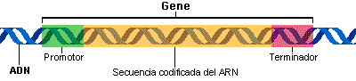

Especialización en Bioinformática
Diseño de una arquitectura en pipeline para la descarga
y análisis de secuencias de promotores
en Solanum Lycopersicum
Ing. Alejandro Damián Pistilli Neri
FCByF & FCAGR
Tutora: Dra. Débora Arce
Abril 2017
Introducción
Nuevas tecnologías de secuenciación: Big Data
Sol Genomics Network: Heinz 1706 de Solanum Lycopersicum
Estado de madurez del fruto de tomate: motivos de ADN en los promotores génicos

El TF nace como respuesta a un problema real: el análisis de regiones promotoras de genomas de solanáceas
Objetivo
Desarrollar una arquitectura en pipeline para la descarga y análisis de promotores de genes de Solanum lycopersicum cv Heinz 1706, desde la web Sol Genomics Network
Problemas
Automatizar la descarga de 2500 promotores (semanas)
Solución
Codificación de un script
Problema
Minimizar el tiempo de descarga de 2500 promotores (12 hs.)
Solución
Correr varias instancias simultáneamente
Problema
Cortes de luz e internet y el acceso simultáneo de varias instancias a un mismo archivo de resultados
Soluciones
Codificación de un script
Utilizar una base de datos para el acceso simultáneo y recuperación en caso de cortes
Aplicar threads para reduccir el tiempo de descarga de los 2500 promotores de 12 hs. a 2 hs.
Problemas
Establecer número de threads
Persnalizar la cantidad de pb río arriba/abajo a partir del SIT
Descargar un "gap" a partir del SIT
Analizar los resultados con MEME y TOMTOM
Soluciones
Codificación de un script
Utilizar una base de datos
Aplicar threads
Archivo de configuración y parametrización por terminal
Arquitectura en pipeline
Ejecución
$ python3 pip_prom_tom.py
-i lista_promotores.txt
-o nombre_del_proyecto
-u 1000 -d 1000
-g 250
-p 1
Ayuda
$ python3 pip_prom_tom.py -h
La salida es:
Usage: pip_prom_tom.py [options]
Options:
-h, --help show this help message and exit
-i FILE, --in=FILE Archivo de entrada
-o DIROUT, --out=DIROUT Proyecto de salida (default="proy")
-p PIPE, --pip=PIPE Modo pipeline (default=0)
-u UP, --up=UP Cantidad bp upstream (default=0)
-d DOWN, --down=DOWN Cantidad bp downstream (default=0)
-g GAP, --gap=GAP Gap de bp upstream o downstream (default=0)
Características
Desarrollo con herramientas de código abierto:
GNU/Linux OS: Sistema operativo
Python: Lenguaje de scriping
Git: Sistema de versionado
SQLite: Base de datos
Ventajas
Git: Explora todo el desarrollo del proyecto
GitHub.com: Online y disponible
Escalabilidad: Flexibilidad y adaptación
Costo nulo de software
Licencia GNU GPL
Threads
Expresiones Regulares: Análisis de HTML
Importancia
Aplicar a otras variantes anotadas
Herramienta bioinformática Facilita el estudio
Labor interdisciplinar
El TF incluye un DVD para compartir con el código, video explicativo y manuales
Amplia las funcionalidades ofrecidas por la SGN
Conclusiones
Desarrolló y automatizó una arquitectura en pipeline
Creó todo el proyecto en una plataforma de versionado de software
Implementó conjuntamente threads en Python, expresiones regulares y base de datos SQLite
Presentó una metodología que es aplicable a otras áreas biológicas
Agradecimientos
A la Dra. Débora Arce
Al Dr. Guillermo Pratta
A Luciana, Silvina, Araceli y Evelina
A la cátedra de genética y al grupo de tomate
A Silvana, Rubén, Pablo y Aye
A Celi
Al Dios de Jesucristo